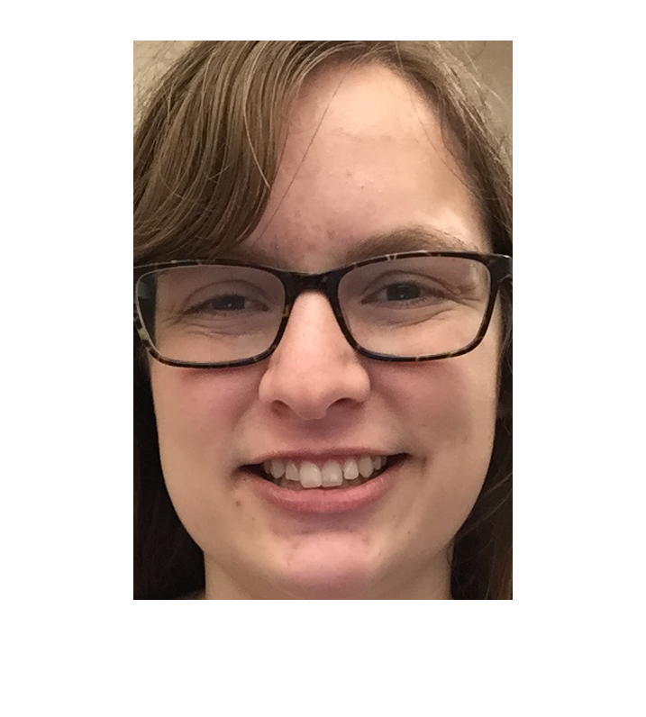

Contents
L1.2
Import the image into Matlab using imread() function. You may want to read Matlab documentation about different functions along the way (e.g., doc imread, imwrite).
I = imread('Victoria_Hall.jpg');
gray = rgb2gray(I);
L1.3
Display your image using imshow(), image(), imagesc(). Note that some of these functions do not work with RGB images. Convert RGB image to grayscale, if needed, using rgb2gray() for display.
I noticed that the grayscale images are displayed differently when using image() and imagesec() in that image() appears more yellow while imagesec() shows more depth to the picture.
figure; imshow(I); figure; image(I); figure; imagesc(I); figure; imshow(gray); figure; image(gray); figure; imagesc(gray);
L1.4
Resize your image to 256 × 256 resolution using imresize().
I2 = imresize(I, [256 256]); figure; imshow(I2);
L1.5
Manually select and crop a region in the image that contains your face alone. For instance, if your face lies within a rectangle with corners (y_topleft,x_topleft), (y_bottomright, x_bottomright), then use face_image = full_image(y_topleft:y_bottomright, x_topleft:x_bottomright,:).
y_topleft = 110; y_bottomright = 730; x_topleft = 260; x_bottomright = 680; face_image = I(y_topleft:y_bottomright, x_topleft:x_bottomright, :); figure; imshow(face_image);
L1.6
Replace the region of your face with a box that has White, Black, Red, Blue, and Green stripes.
width = (x_bottomright - x_topleft) / 5; height = y_bottomright - y_topleft; figure; imshow(I); rectangle('Position', [x_topleft y_topleft width height], 'FaceColor', 'w'); rectangle('Position', [x_topleft+width y_topleft width height], 'FaceColor', 'k'); rectangle('Position', [x_topleft+(2*width) y_topleft width height], 'FaceColor', 'r'); rectangle('Position', [x_topleft+(3*width) y_topleft width height], 'FaceColor', 'b'); rectangle('Position', [x_topleft+(4*width) y_topleft width height], 'FaceColor', 'g');
L1.7
Resize face image to 64 × 64 resolution.
I3 = imresize(face_image, [64 64]); figure; imshow(I3);
L1.8
Save your resized full image and face image using imwrite().
imwrite(I2, 'resized_full_image.jpg'); imwrite(I3, 'resized_face_image.jpg'); I_full = imread('resized_full_image.jpg'); I_face = imread('resized_face_image.jpg'); figure; imshow(I_full); figure; imshow(I_face);
L1.9
Plot a histogram of intensities in your full and face images for each color channel. Use hist() to compute histograms and plot() to plot each histogram.
Ir = I(:, :, 1); Ig = I(:, :, 2); Ib = I(:, :, 3); fr = face_image(:, :, 1); fg = face_image(:, :, 2); fb = face_image(:, :, 3); fullr = hist(double(Ir(:)), 255); fullg = hist(double(Ig(:)), 255); fullb = hist(double(Ib(:)), 255); facer = hist(double(fr(:)), 255); faceg = hist(double(fg(:)), 255); faceb = hist(double(fb(:)), 255); figure; bar(fullr, 'r'); title('Full Image Red Channel'); figure; bar(fullg, 'g'); title('Full Image Green Channel'); figure; bar(fullb, 'b'); title('Full Image Blue Channel'); figure; bar(facer, 'r'); title('Face Image Red Channel'); figure; bar(faceg, 'g'); title('Face Image Green Channel'); figure; bar(faceb, 'b'); title('Face Image Blue Channel');